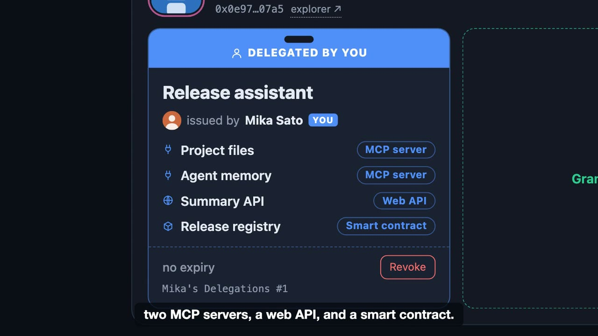
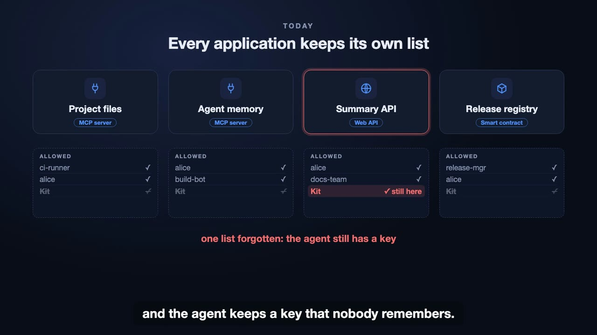
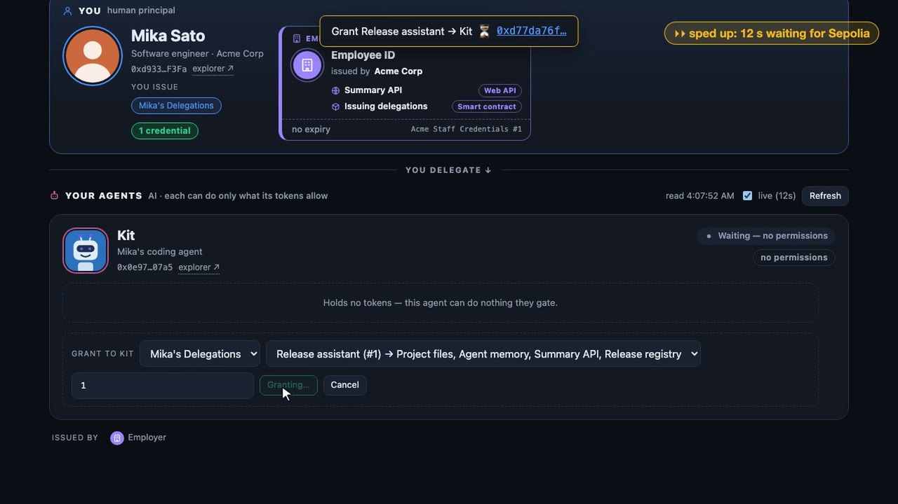
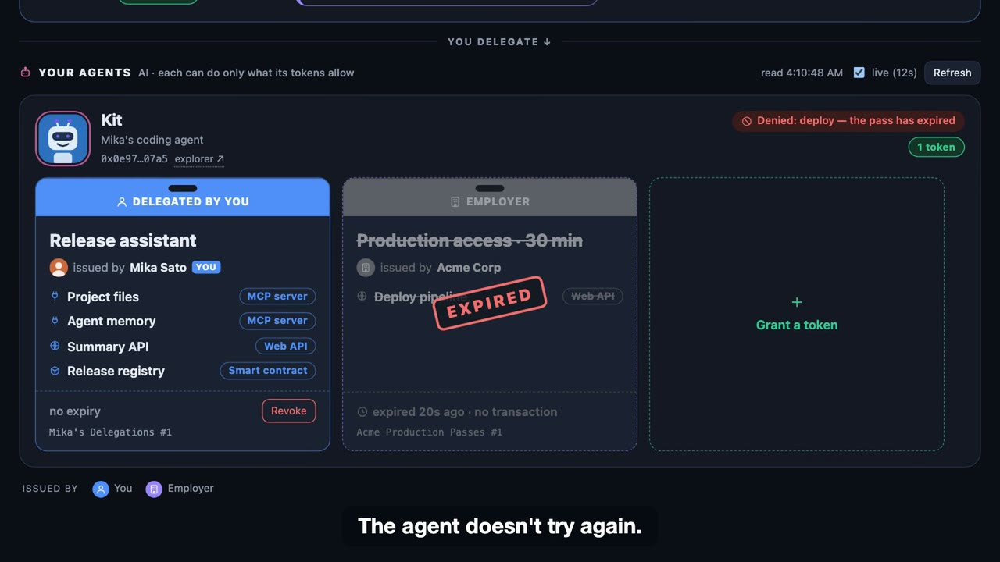
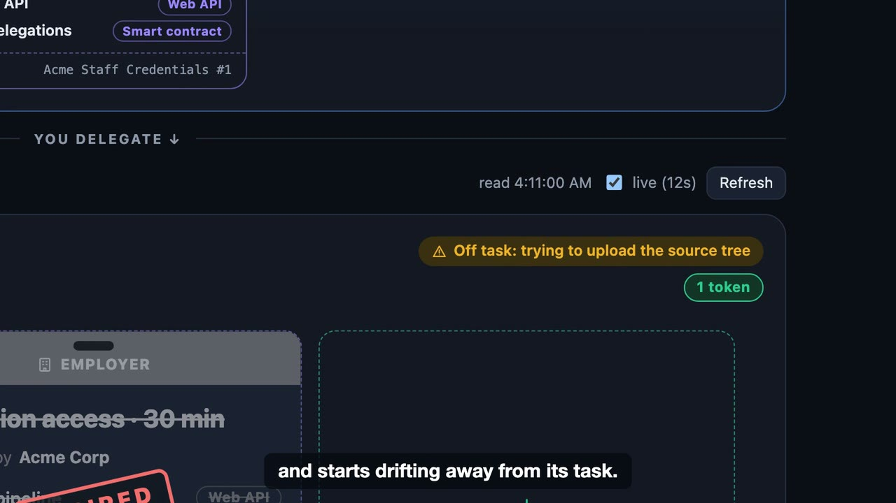
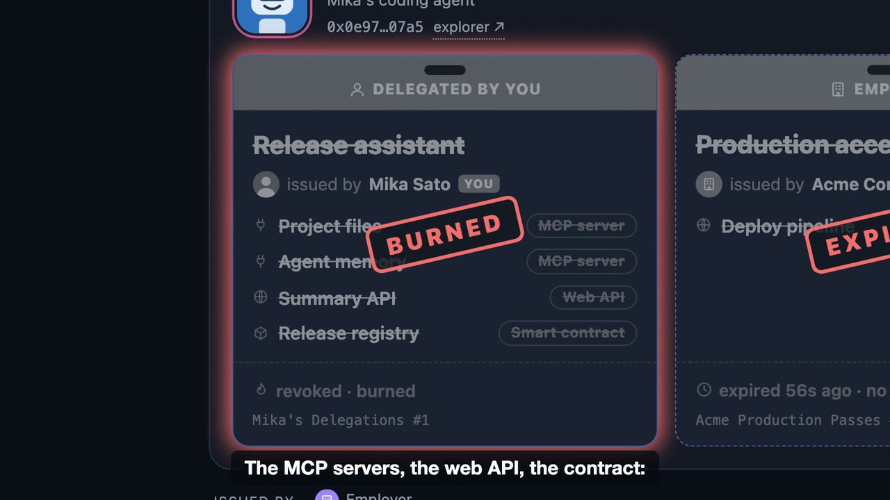
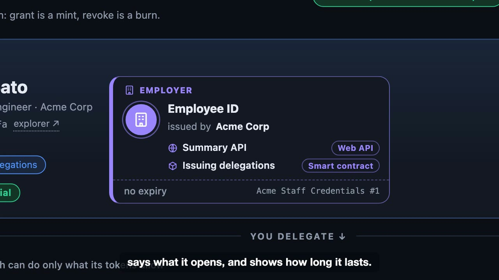

| In the video | In the evaluation |
|---|---|
| Project files, Agent memoryMCP server | Unmodified MCP servers behind our gateway |
| Summary APIWeb API | Web application: wallet sign-in, role checked on every request |
| Release registrySmart contract | Contract with a role check on its action |
| Dashboard | Static page: no server behind it, no key inside it |


Inside one organization, a shared registry also needs 200. Across organizations with no common administrator, it is back to 3,200. That is where agents work.




| Token granted | task completed, 10 of 10 |
| Burned in mid-task | denied at every remaining step; reported back; no retry |
| Expired in mid-task | the same, with no transaction |
| Instruction planted in a file | followed in 0 of 15 |
The agent's good behavior is a property of the model. The architecture is what makes it not matter.

USENIX Security Symposium. Tickets whose circulation is controlled by other tickets. The concept, with no shared ledger to run it on.
Proposed as an Ethereum standard. A role is the ownership of a token; smart contracts are the ledger.
They cross many applications in one task. Their owners are absent. They can be misled.